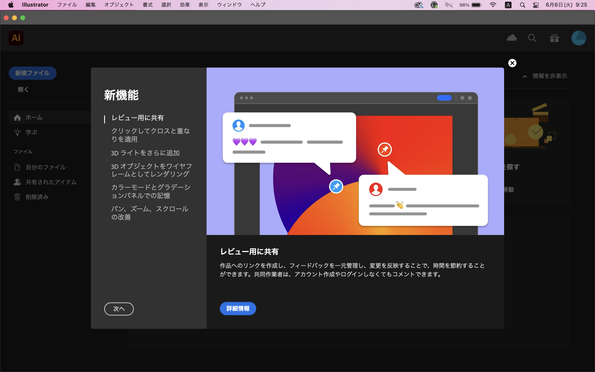
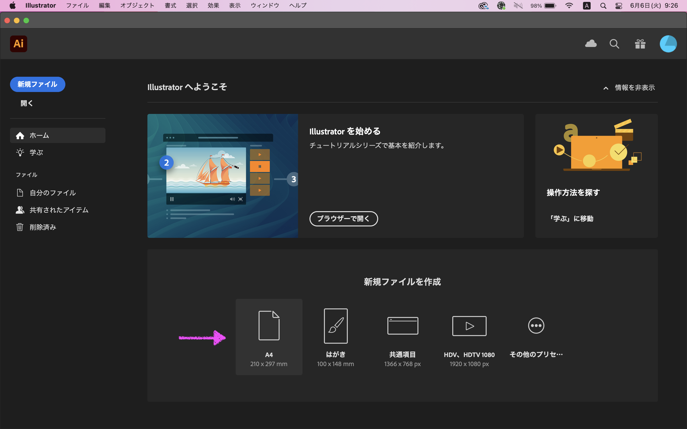
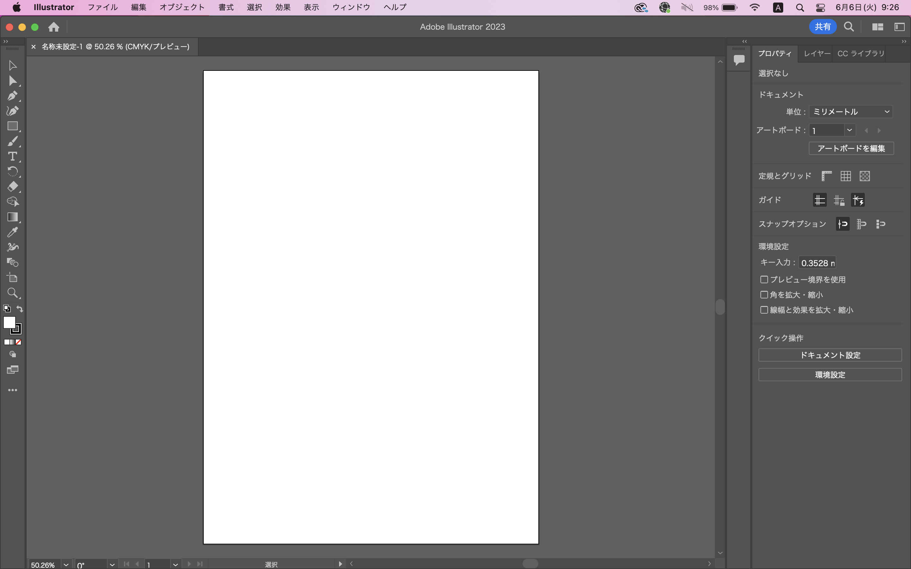
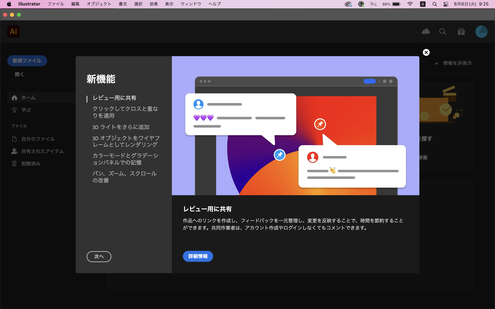
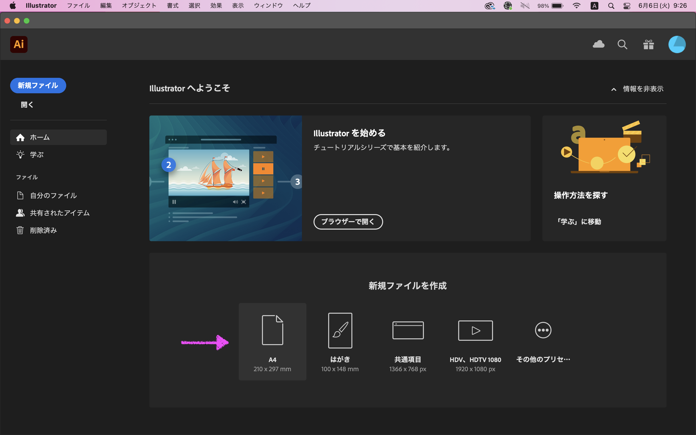
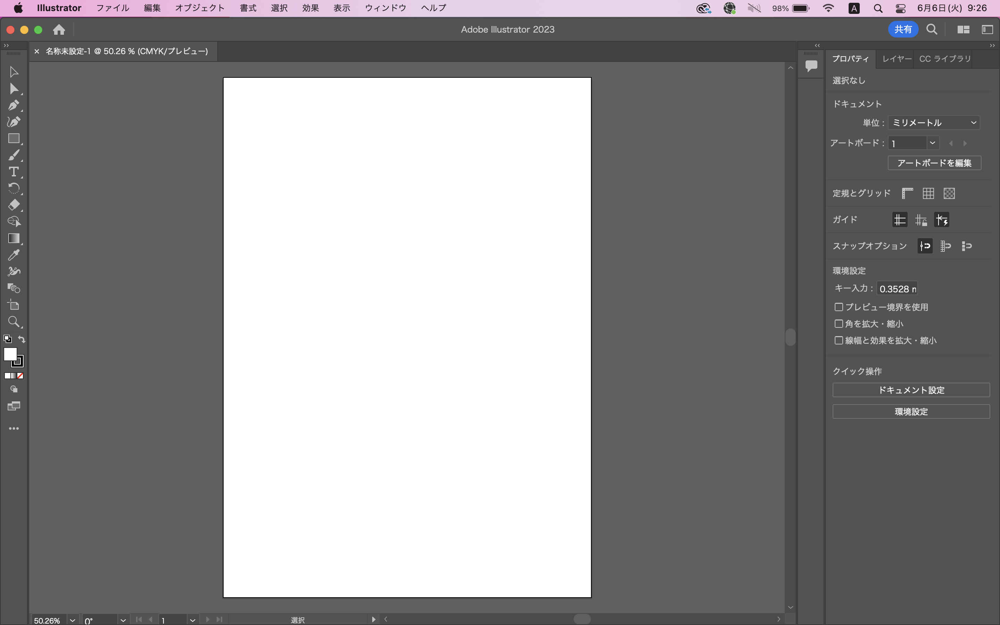
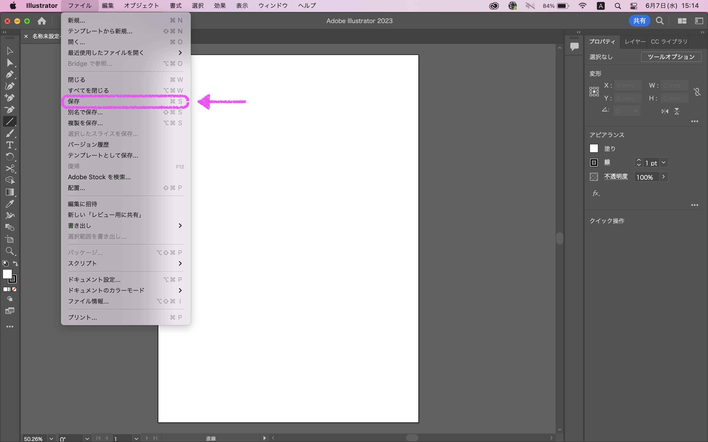
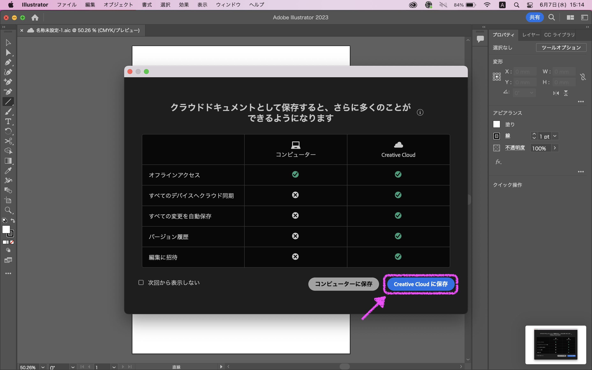
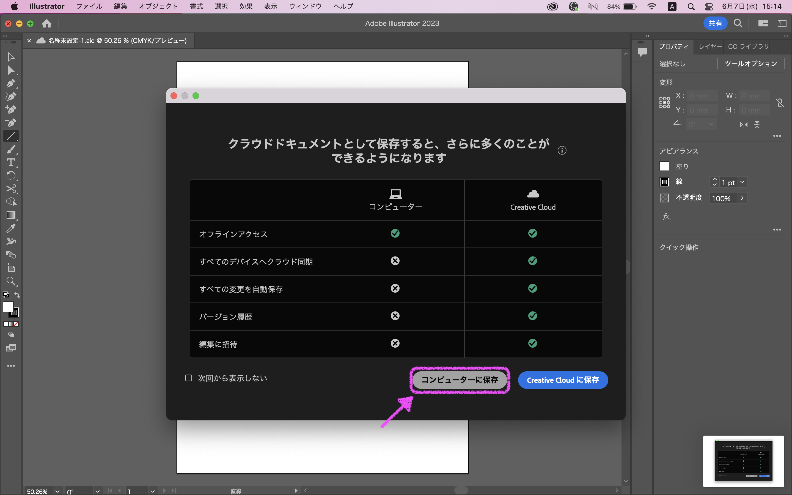

(1) Illustratorファイルの新規作成
Illustratorの起動
はじめてIllustratorを起動すると、新機能の紹介があります。右上の×で閉じるか、次へで新機能を確認します。
アートボードのサイズの選択
新規ファイルを作成から、A4を選択します。
A4が表示されていない場合は、その他のプリセットからA4を選択します。
新規ファイル
新規のファイルが作成されました。
はじめてIllustratorを起動すると、新機能の紹介があります。右上の×で閉じるか、次へで新機能を確認します。
新規ファイルを作成から、A4を選択します。
A4が表示されていない場合は、その他のプリセットからA4を選択します。
新規のファイルが作成されました。
メニューバーのファイルから保存を選択します。
Creative Cloudに保存を選択します。
① ファイル名を入力します。
② 保存をクリックします。
メニューバーのファイルから別名で保存を選択します。
コンピュータに保存を選択します。
① ファイル名を入力します。
② ファイル形式をAdobe PDF (pdf)を選択します。
③ 保存をクリックします。
①  選択ツールで出力したいパスを選択します。
選択ツールで出力したいパスを選択します。
② 右クリックし、メニューを開きます。
③ 書き出し用に追加を選択します。
④ 単一のアセットとしてを選択します。
⑤ アセットの一覧から保存したいアセットを選択します。
⑥ 倍率を選択します。
⑦ 保存形式（PNGまたはSVG）を選択します。
⑧ 書き出しをクリックし、適当なフォルダに保存します。
保存先のフォルダを選択すると、倍率ごとにフォルダが作成され（1x，2x，3x，4xなど）、その中に画像ファイルが書き出されます。